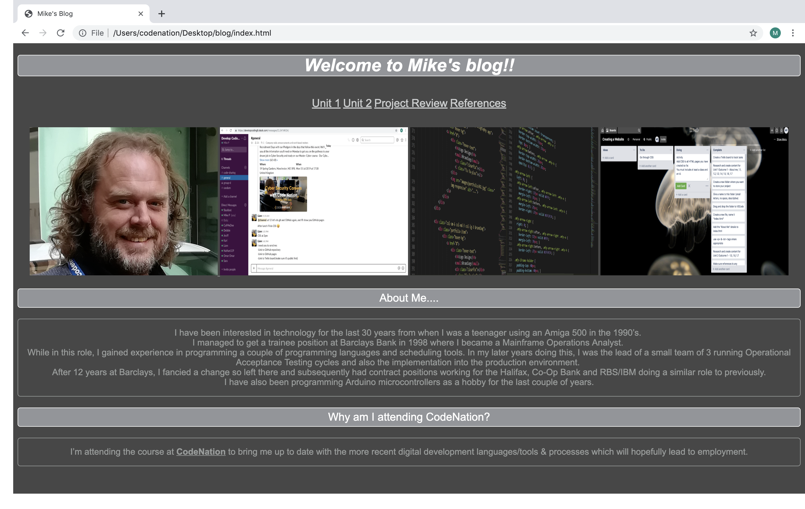
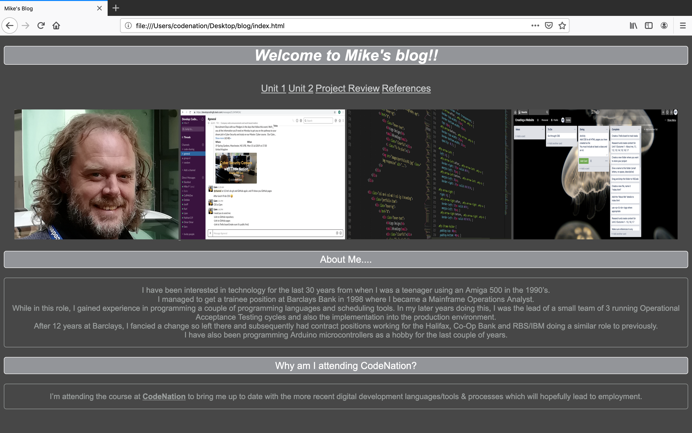

The tools used are proven and established. I didn’t find that I was in need of any further features /
functions.
I'm comfortable using Visual Basic Code to write HTML & CSS.
I could have made better use of Trello by adding more cards to improve tracking of my tasks.
GitHub is useful to keep all code and project resources in a central repository.
As the project was not very complex, I don’t think it would have been beneficial to work in a team.
With more experience and training, I would be able to make the website more efficient by using methods and
functions I’m not yet familiar with.
I could make more use of classes within CSS to improve efficiency and reduce duplication of effort when
applying common styles.
Slack could be used in a team environment to enable easy interaction between team members.
I could make better use of Trello by creating more cards to track tasks.
I could continue to learn HTML and CSS which will then enable me to create a website which would be more
efficient.
Depending on the size of the project, it may be beneficial to work in a team and allocate tasks accordingly.
Thoroughly test all areas of the project and ensure any changes/fixes do not have any adverse effect on
other parts of the project.
Ensure all links work throughout the website.
Ensure the website is consistent in its layout throughout the different pages.
Ensure all images and text are aligned satisfactorily.
Test the website on different devices and check for any unexpected behaviour with the UI & UX.
 